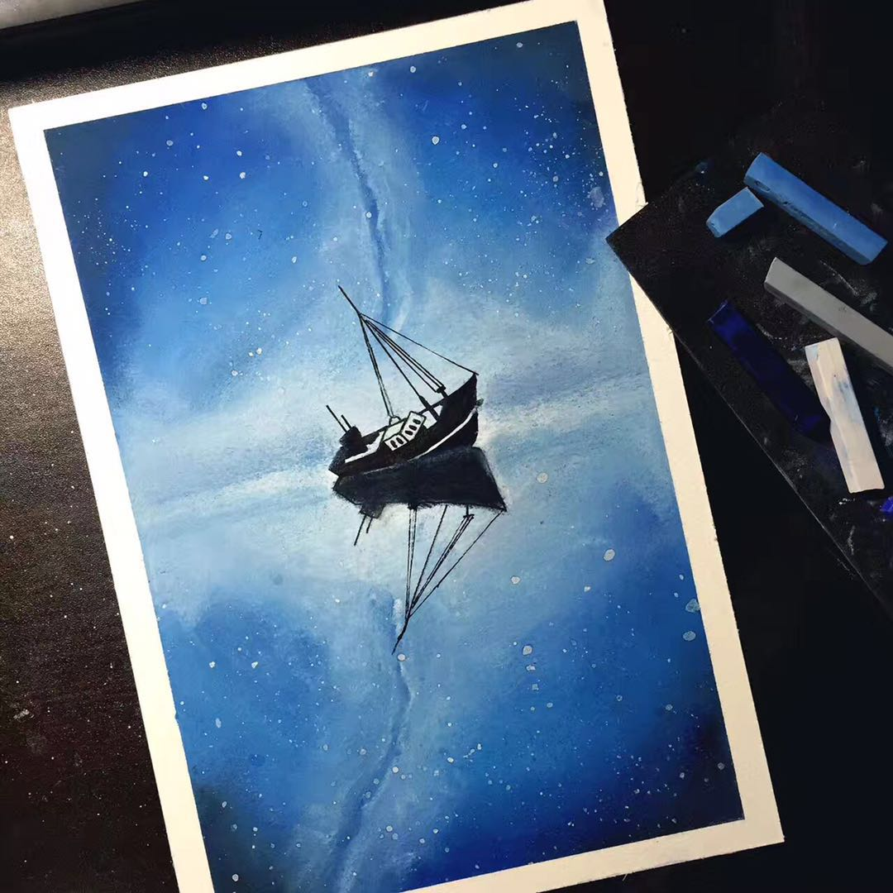
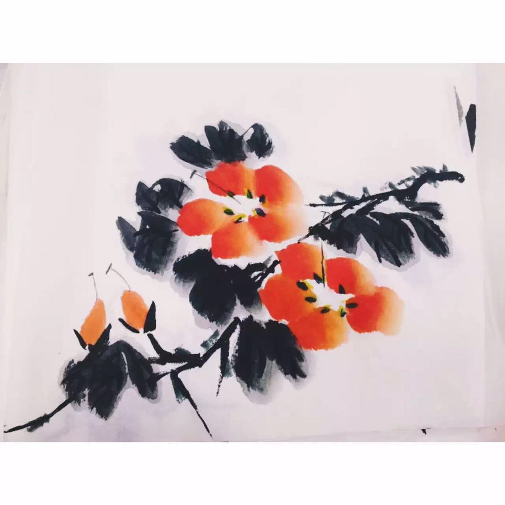

I like painting. I find it a good way to express my feelings when I'm lost or happy. I like trying various painting pigments. For example, color lead, watercolour, toner and Chinese painting colour and ink. Here are some of my recent works, most of them are for fun.
The last painting of 2017！！HAPPY NEW YEAR!
A heart with flower on it
The Lion King
My first time painting with toner. I want to go to the North Pole suddenly.
Hoping I will have the chance to see the Northern Lights one day.
The color lead is a birthday present from my friend. The girl is one of the princess in Disney. Every girl has a princess dream deep in heart, isn't it?

Some work with Chinese painting colour and ink.
Try the fashion design occasionally？？
A flower painted by roller ball pen.